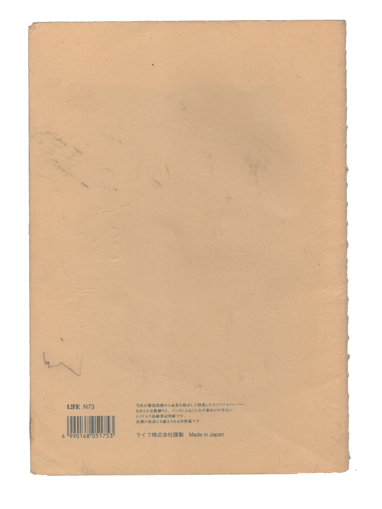
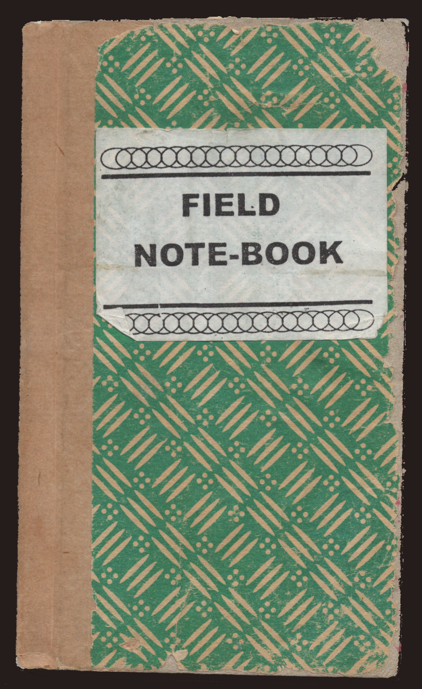
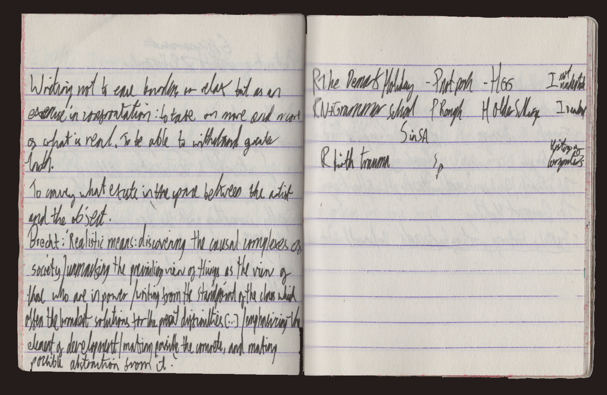
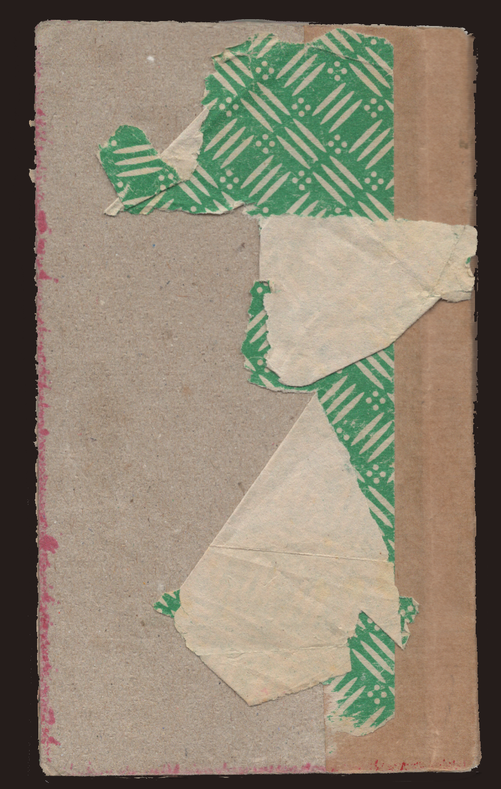
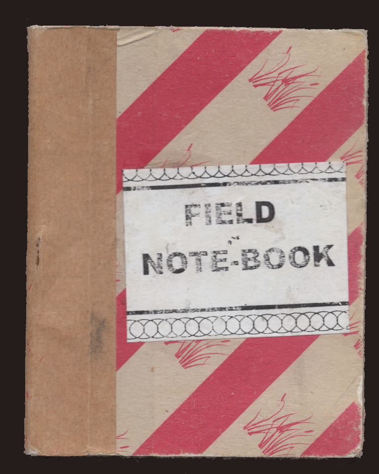
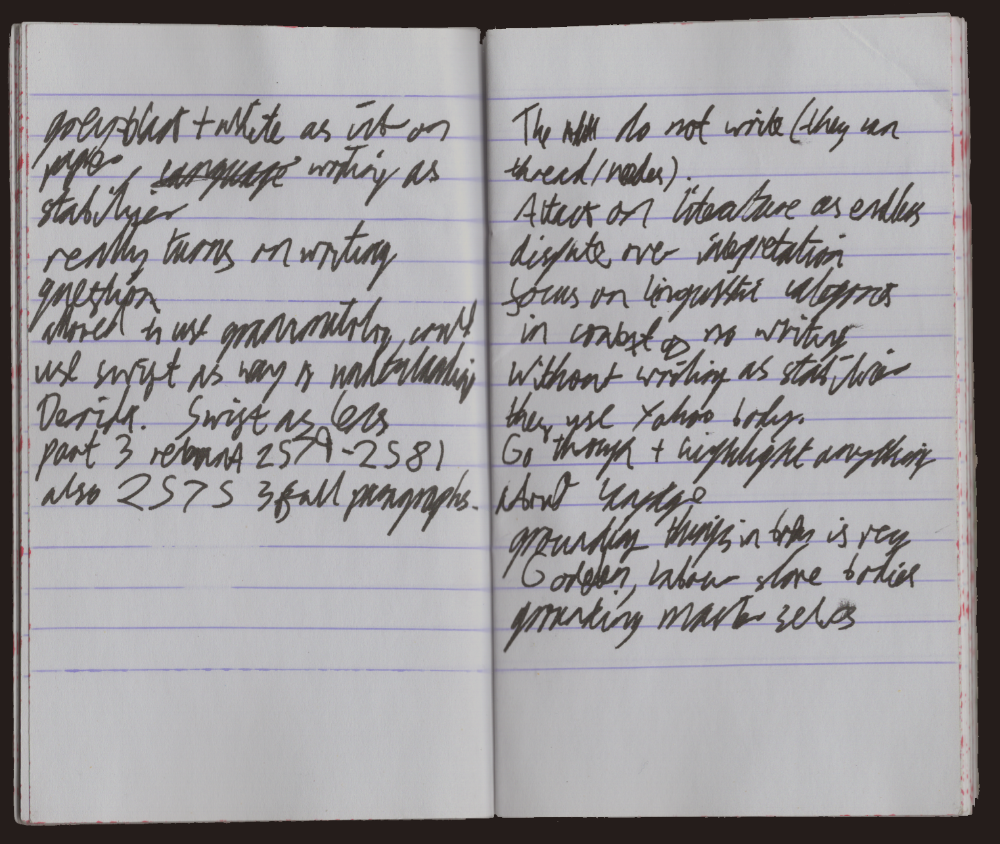
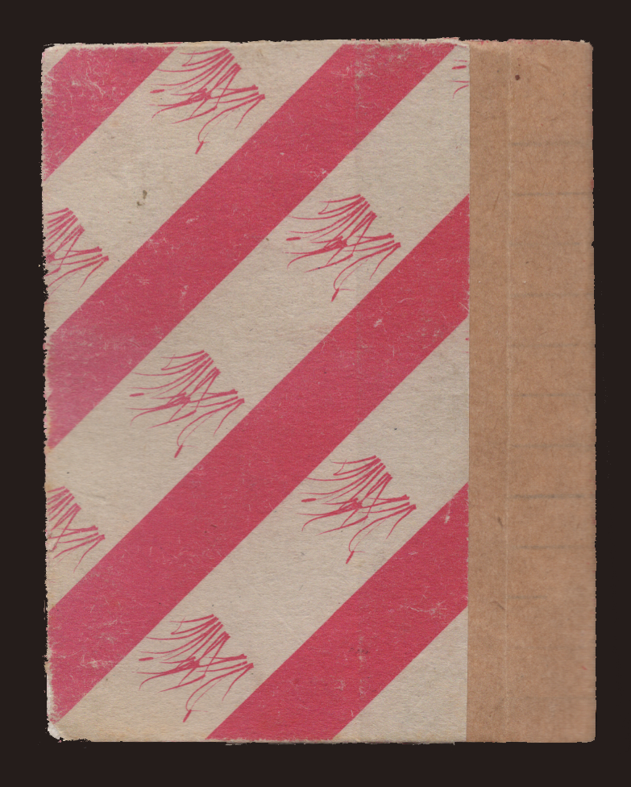

L kept various notebooks; larger format for reading notes and research, and smaller ones for various other purposes and purposelessness. While notebooks would most often be associated with a private self, L was adamant about including their contents as part of their collected stuff - and Ihope to be able to document them properly, soon, if I can get better at reading their spidery scrawl. L didn’t see these notebooks so much as a reflection of themselves, anyway; they conceptualised the self as a kind of conduit for the experiences and encounters that truly make up the actual substance of a life, and accordingly thought of the notebooks as a way to externalise some of those conceptual and material encounters in order to produce new moments of fruitful collision.